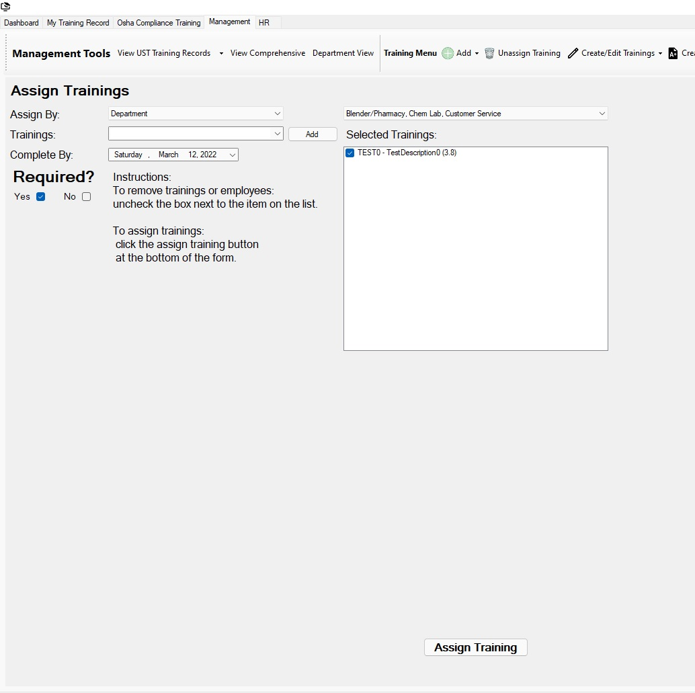

Return to Main Menu
Assign Training to Department
The Assign Training page can be found under the "Add" section of the Training Menu in the Management tab.
Assigning trainings to a department assigns trainings to all employees currently in that department and automatically assigns the trainings to all future employees added to the department.
It is useful when a training is required for all current and future employees in a department.
NOTE!: Assigning a training to a department will assign it to child departments of that department
(Example: assigning a training to the quality department will assign the training to the Lab department as well).

Instructions:
-
For the "Assign To" field, choose "Department".
A box will appear to the right of the "Department" box.
In this box you may select one or more departments. There will be no "Selected Employees" box on the page.
-
Add Trainings by searching for the training and then pressing the "Add" button next to the training search box.
Trainings can be unselected by clicking the checkmark next to the training in the "Selected Trainings" box.
-
Choose whether the training should be required for employees in the selected departments.
-
Choose a due date for the training (this due date will apply to current employees of the department). Due dates in the past are invalid (only current day-future dates may be selected).
-
Press the "Assign Training" button on the bottom-right-hand side of the page.